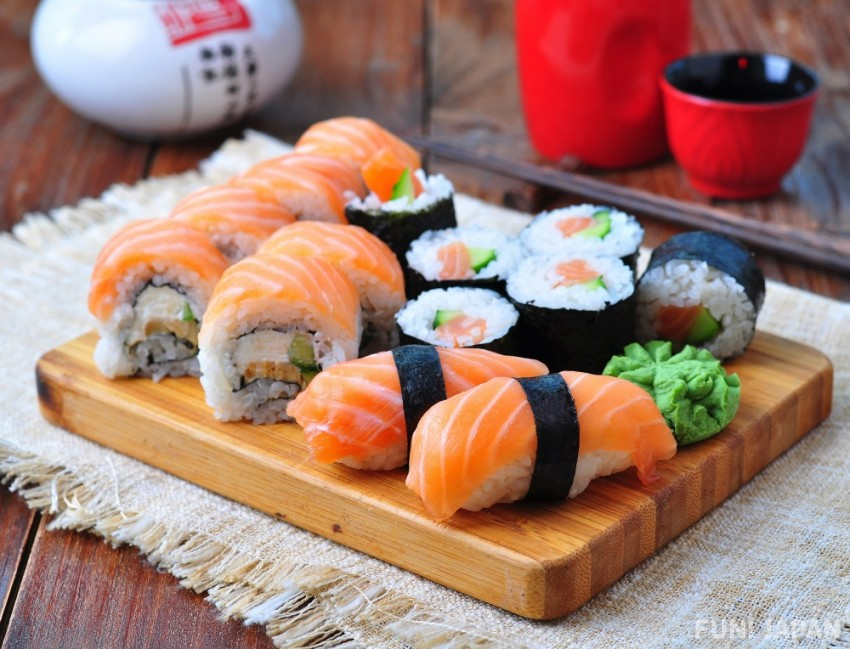

Mijn favoriete muziek
Andere dingen die ik graag heb
-
Sushi:

Ik ben dol op sushi, vooral verse sashimi en maki rolls.
-
K-Drama's:
Ik kijk graag naar K-drama's, vooral romantische en komische series.
-
Parfums:
Ik hou van geuren en heb een kleine collectie van verschillende parfums.